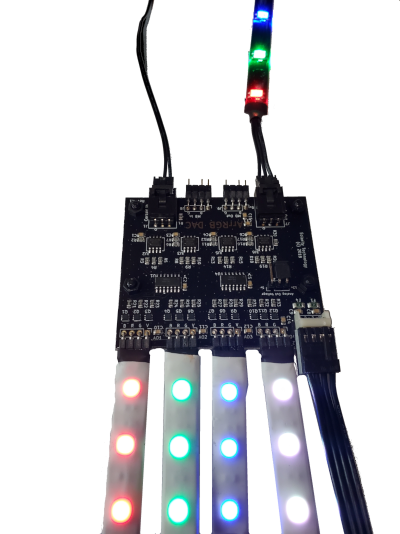

The ArrRGB DAC is a 4 channel RGB device that allows you to use a 5v Digital/Addressable signal from a motherboard header or RGB controller and control Analog RGB devices on 4 different channels via the digital signal. This device requires an addressable signal to work; it will not function without a controller/MB header. You can daisy-chain additional RGB DACs or other RGB devices from the digital output. Unlike the input, both “Corsair Out” and “MB Out” can be used at the same time. Just please keep the LED limits in mind.

If you have any quesitons, feel free to hit us on our Discord Channel. You can also find the instructions for the the DAC here: Instructions